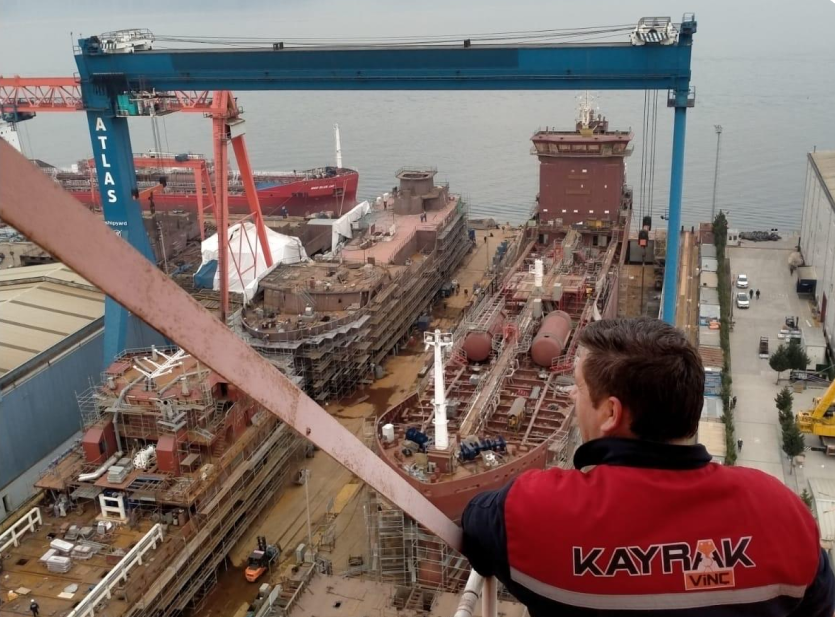
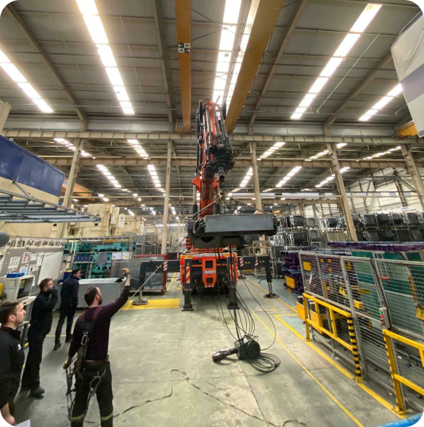
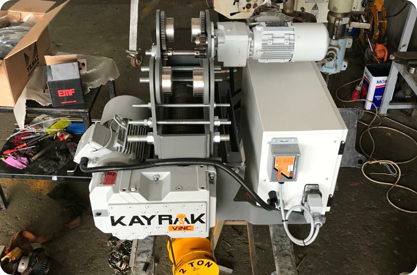

TEKNİK SERVİS VE BAKIM HİZMETLERİ
Kesintisiz Performans,
Maksimum Güvenlik
Vinç sistemleri, ağır yükleri kaldırmak ve taşımak üzere tasarlanmış hassas ve karmaşık makinelerdir. Bu sistemlerin güvenli, verimli ve uzun ömürlü çalışabilmesi için düzenli bakım ve teknik servis hayati önem taşır. Uzman ekibimiz, vinçlerinizin performansını maksimum seviyede tutmak için kapsamlı bakım planları ve hızlı müdahale hizmetleri sunar.

Hizmet Kapsamımız
Periyodik Bakım: Tüm vinç ve ekipmanların yağlama, kontrol, ayar ve test işlemleriyle düzenli olarak optimize edilmesi.
Arıza Tespiti ve Onarım: Olası mekanik, elektriksel ve elektronik sorunların hızlı ve kalıcı çözümleri.
Yedek Parça Temini: Orijinal ve sertifikalı yedek parçalar ile sistemlerin tam uyumlu ve uzun ömürlü çalışması.
Performans Testleri: Vinçlerin çalışma kapasitesi, fren sistemleri ve güvenlik mekanizmalarının periyodik testleri.
Acil Müdahale: 7/24 ulaşılabilir teknik servis hattımız ile acil durumlara hızlı müdahale.
Modernizasyon ve Revizyon: Mevcut vinç sistemlerinin son teknolojiye uygun hale getirilmesi, performans artırımı ve otomasyon entegrasyonu.



Neden Düzenli Bakım?
Güvenlik: Operatör ve çalışma ortamının güvenliği için tüm mekanik ve elektronik bileşenlerin eksiksiz şekilde çalışması gerekir.
Verimlilik: Düzenli bakımı yapılan vinç sistemleri daha yüksek performans sunar, iş süreçlerinde zaman kaybını önler.
Maliyet Tasarrufu: Önleyici bakım sayesinde büyük arızalar oluşmadan müdahale edilir ve yüksek onarım maliyetleri engellenir.
Yasal Uyum: İş güvenliği yönetmelikleri ve periyodik kontrol standartlarına uygunluk sağlanır.
Uzman Kadro ve Kesintisiz Destek
Deneyimli mühendis ve teknisyenlerimiz; gezer köprülü vinç, portal vinç, monoray vinç ve özel yapım kaldırma sistemlerinde kapsamlı bakım, arıza tespiti ve teknik destek hizmeti sunmaktadır. Her marka ve model için hızlı servis anlayışıyla çalışıyor, gerektiğinde yerinde müdahale gerçekleştiriyoruz.